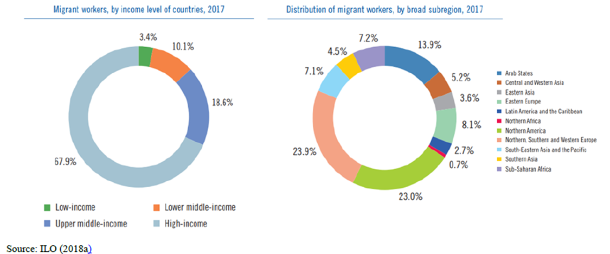

Long Descriptions
Example:
Figure 1. Comparison of Migrant Workers by Income Level and Subregion

Formatted Document
Figure 1. Comparison of Migrant Workers by Income Level and Subregion
Source: ILO (2018a)
Alt Text for image [does not appear on page]: Two Pie Charts of Migrant Workers, by Income level of Countries, 2017 and Distrubtion of Migrant workers, by broad subregion, 2017. Alt text provided below image.
[Begin Alt Text]
Migration workers, by income level of countries, 2017
The data presented in pie chart is given below:
- Low income: 3.4%
- Lower middle-income: 10.1%
- Upper middle-income: 18.6%
- High income: 67.9%
- Arab states: 13.9%
- Central and western area: 23.9%
- Eastern Asia: 3.6%
- Eastern Europe: 8.1%
- Latin America and the Caribbean: 2.7%
- Northern Africa: 0.7%
- Northern America: 23%
- Northern, Southern and Western Europe: 23.9%
- South-eastern Asia and the pacific: 7.1%
- Southern Asia: 4.5%
- Sub-Saharan Africa: 7.2%
Image Title [Strong] Figure 1. Comparison of Migrant Workers by Income Level and Subregion [/Strong]
Move notes to the top Source: ILO (2018a)
Screenshot image into text [Image]
Provide a title for the images in alt text, followed by Alt text provided below image
Alt Text for image [does not appear on page]: Two Pie Charts of Migrant Workers, by Income level of Countries, 2017 and Distrubtion of Migrant workers, by broad subregion, 2017. Alt text provided below image.
[Strong] [Begin Alt Text] [Strong]
Migration workers, by income level of countries, 2017
The data presented in pie chart is given below:
- Low income: 3.4%
- Lower middle-income: 10.1%
...
...
[Strong] [End Alt Text] [/Strong]